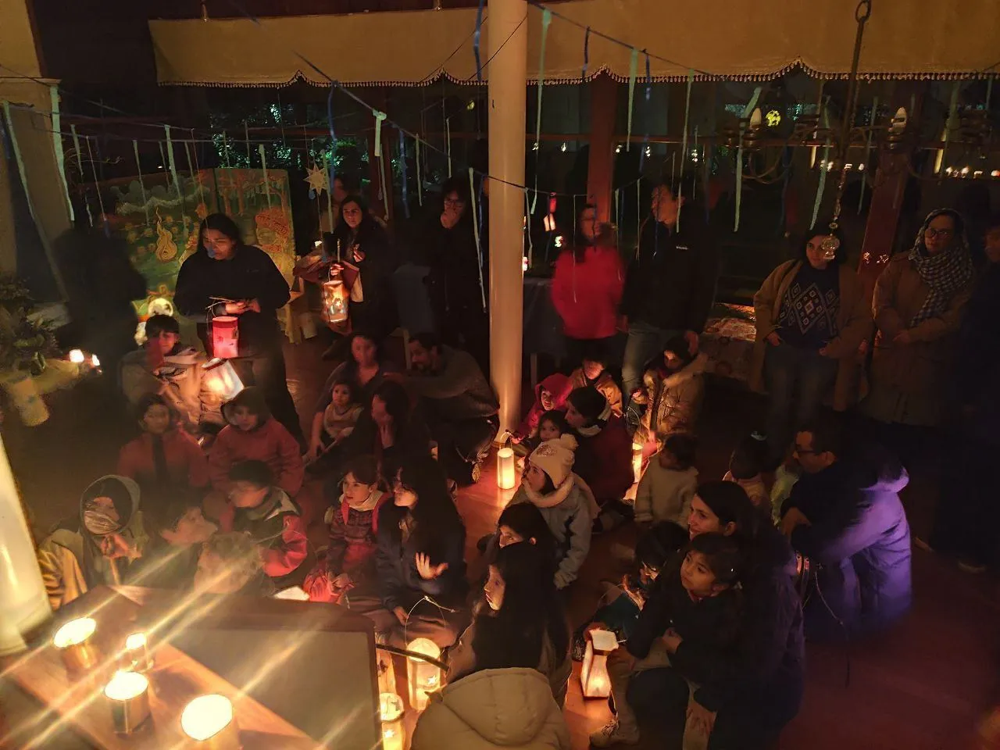
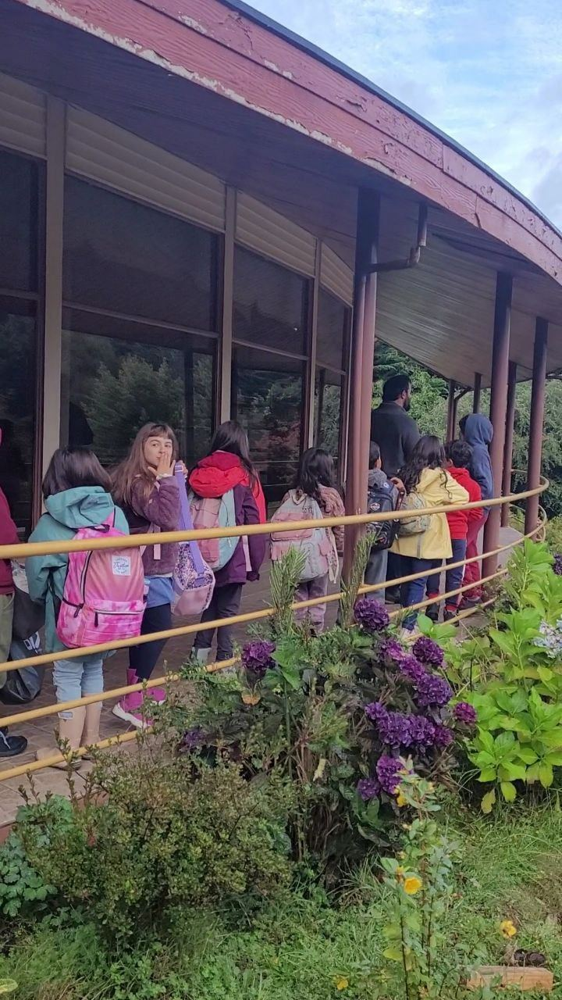
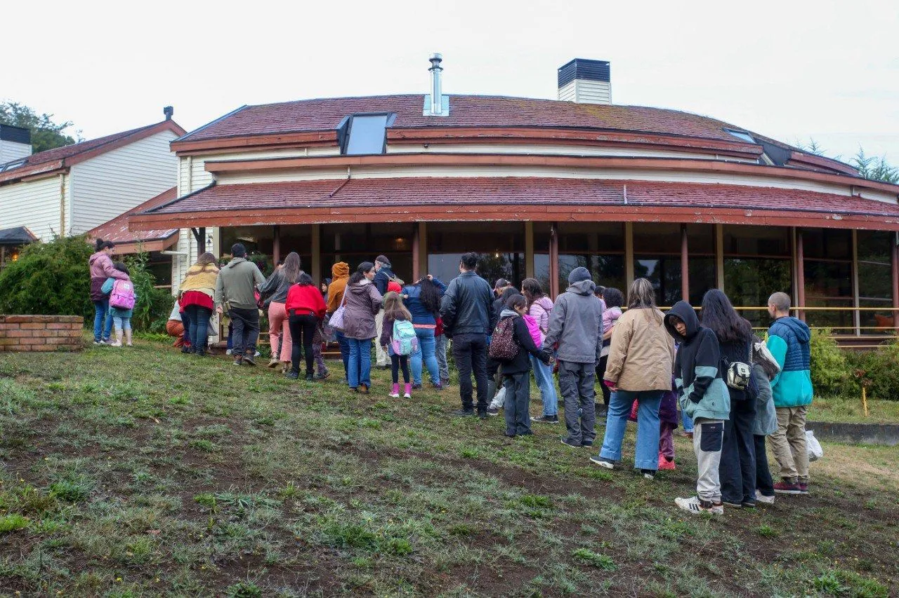
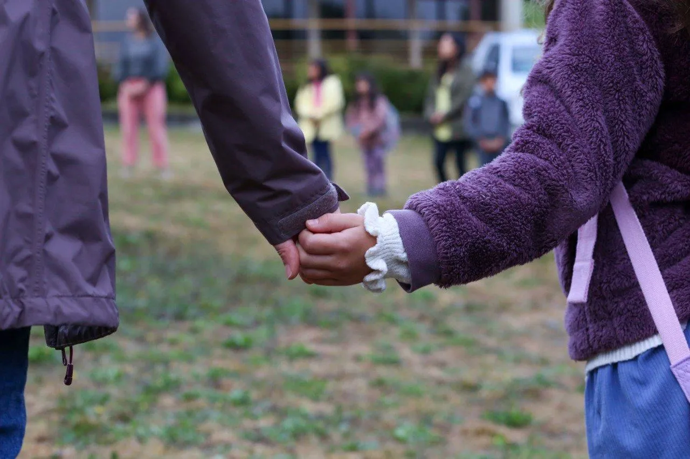
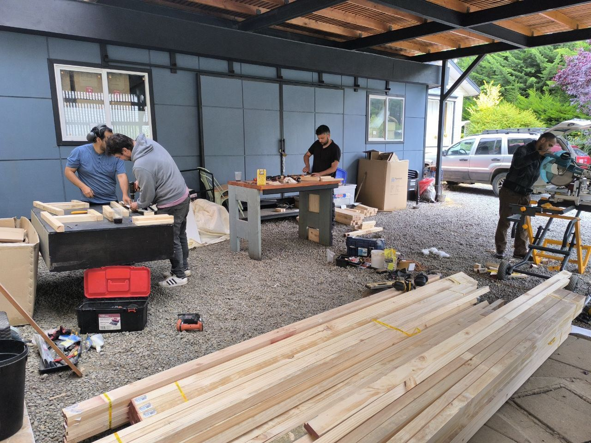
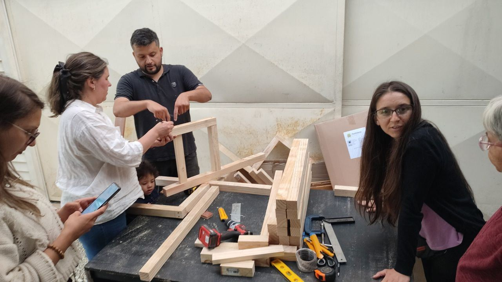
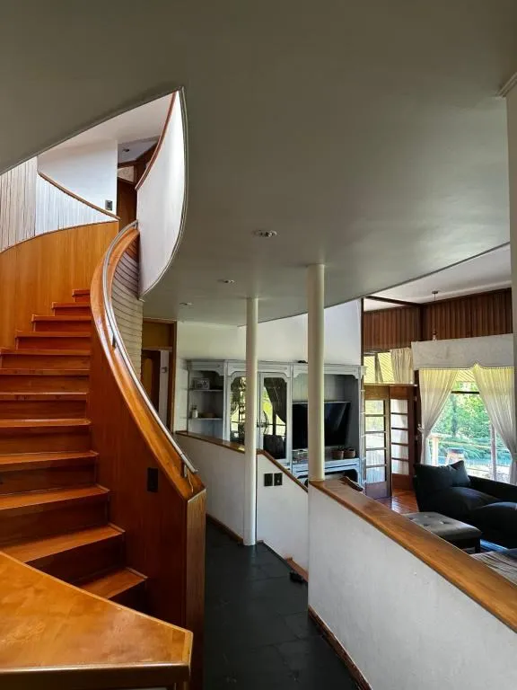
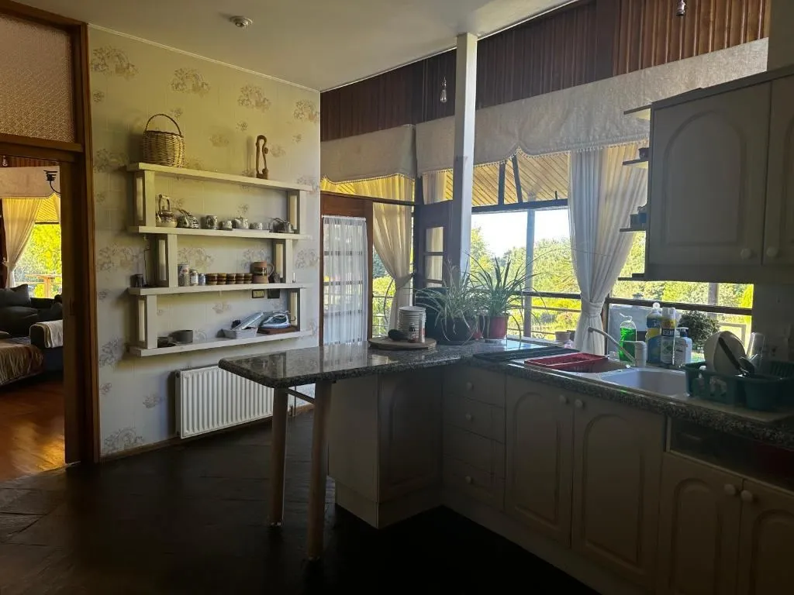
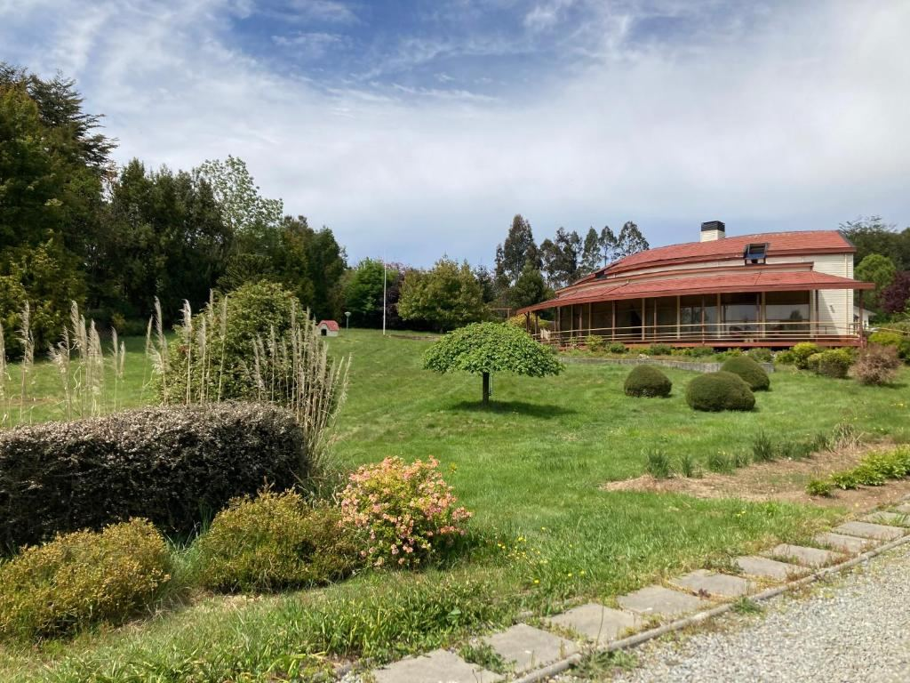
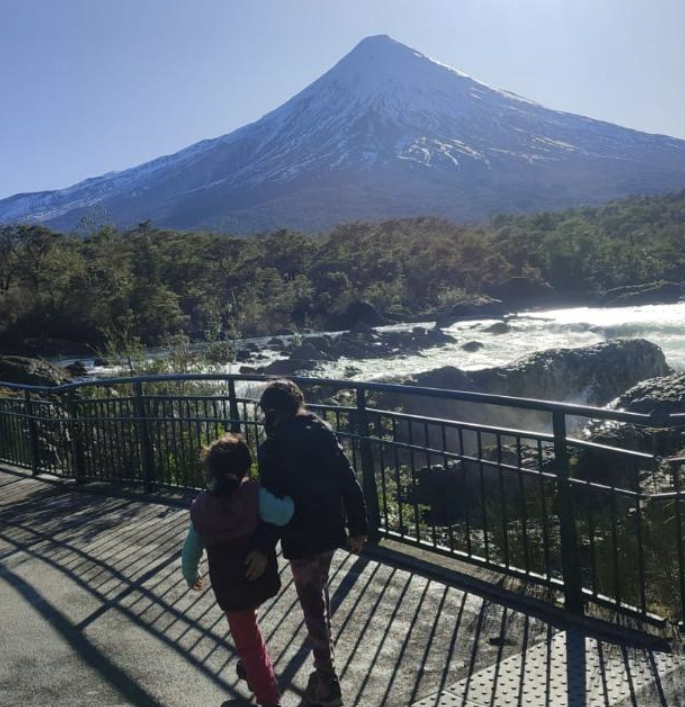

Donde el niño camina con voluntad
En el corazón de Puerto Varas, nace Trekan, una comunidad educativa inspirada en la pedagogía Waldorf que acompaña a niñas y niños de 3 a 14 años en su desarrollo integral.
Trekan significa caminante en mapudungun: un ser que decide encaminarse hacia el mundo… y hacia sí mismo.
Enfoque Pedagógico Waldorf
Inspirados en Rudolf Steiner, entendemos al niño como un ser espiritual en evolución. Nuestra educación armoniza el pensamiento, el sentir y la voluntad a través del arte, el ritmo y el movimiento.
Aprendizaje Vivencial
Matemáticas, lenguaje e historia se viven con las manos, el corazón y la mente.
Maestro Guía
Acompaña al niño durante varios años, creando un vínculo profundo y seguro.
Conexión con la Naturaleza
Huerta, carpintería, salidas al bosque y celebración de las estaciones.
Bloques Temáticos
Contenidos integrados: arte, música, manualidades y movimiento.
Misión, Visión y Equipo
🌱 Misión
Formar personas libres, conscientes, creativas y comprometidas con su entorno, mediante una educación que armonice el conocimiento, el arte y la acción.
🔭 Visión
Ser una comunidad educativa referente en el sur de Chile, por su capacidad de cultivar el respeto, la belleza y el sentido profundo del aprendizaje.
💖 Valores
Respeto, cuidado del entorno, trabajo colaborativo, diversidad, libertad responsable, verdad y belleza.
👥 Equipo
Yabel Painemil: Comunicadora Audiovisual, docente intercultural bilingüe, formación Waldorf básica y especialista en Gimnasia Bothmer.
Javiera Ortega: Profesora General Básica especialista en lenguaje, cursando formación Waldorf.
Hanna Lowen: Profesora de Inglés.
Matías Valiente: Profesor de Carpintería.
Sofía González Rodríguez: Profesora de Música.
Ivonne Parada: Familia Fundadora. Trabajadora Social UV, especialista en convivencia escolar con formación en peritaje social, polivagal, gestalt.
Sleater Martínez: Familia Fundadora. Educadora de Párvulos, cursando formación Waldorf en fundación arche.
Felipe Vivanco Cornejo: Familia Fundadora. Administrador Público UV, con formación en NICSP, Neurociencias, GYDP. Terapeuta, Escuela Arica.
Gerard Muñoz: Familia Fundadora. Ingeniero en Informática.
📅 Próximas Actividades
Momentos importantes para nuestra comunidad. ¡Te esperamos!
Escuela para Padres: "La Luz Interior en el Invierno"
Querida comunidad del Colegio Waldorf Trekan,
Cuando la luz exterior disminuye y el frío nos invita a volver a casa, es momento de cultivar nuestra propia luz interior. Los invitamos a un encuentro especial este 17 de junio, donde profundizaremos en el sentido de las festividades de invierno y prepararemos con nuestras propias manos los faroles que iluminarán el camino de nuestros niños.
Escuela para Padres
Continuamos nuestro ciclo de formación para padres y madres de la comunidad.
Un nuevo encuentro para nutrir nuestra comprensión sobre las etapas de desarrollo infantil y fortalecer nuestra labor como co-educadores.
Festividad Pueblos Originarios
Honramos las raíces y la sabiduría de los pueblos ancestrales.
Celebramos el We Tripantu y el renacer de la tierra. A través del fuego, cantos y danzas, conectamos con la cosmovisión de nuestros pueblos originarios, enseñando a los niños el respeto profundo por la Ñuke Mapu (Madre Tierra).
Solsticio de Invierno
La fiesta de la luz interior en la noche más larga del año.
Cuando el frío y la oscuridad exterior alcanzan su máximo punto, encendemos la luz en nuestro interior. Es un momento solemne y hermoso donde los faroles y el fuego nos recuerdan que la calidez anímica vence a la noche invernal.
¿Quieres participar o tienes dudas sobre alguna actividad?
💬 Consultar por WhatsAppLo que dicen nuestras familias
La mejor carta de presentación es la experiencia de quienes ya forman parte de nuestra comunidad.
"Desde que nuestro hijo entró a Trekan, va feliz al colegio. La educación respetuosa y el contacto con la naturaleza han hecho una diferencia enorme en su desarrollo emocional."
"El enfoque en las artes, la música y el trabajo manual es invaluable. Aquí no solo memorizan contenido, sino que aprenden a pensar y crear con sus propias manos."
"Encontramos un refugio donde el ritmo del niño se respeta de verdad. Los profesores conocen a cada alumno profundamente. Es una verdadera comunidad."
🏡 Vida Comunitaria
En Trekan, la comunidad es protagonista. Las familias participan activamente en la construcción del proyecto educativo.
Fomentamos una gestión participativa, horizontal y transparente, basada en la trimembración social: pedagógica, administrativa y comunitaria.
📰 Noticias y Actualidad
Mantente al día con las últimas novedades de nuestra comunidad educativa.

Escuela para Padres: "El Ritmo y la Respiración en el Hogar"
El otoño nos invita a volver la mirada hacia el interior. En este encuentro de Escuela para Padres, nos reunimos para reflexionar en torno al ritmo diario en el hogar, comprendido como una respiración: momentos de actividad (inhalación) y momentos de descanso (exhalación), que brindan seguridad, contención y calidez a nuestros niños.
Durante la jornada se abrió un espacio de diálogo cercano, donde las familias pudieron compartir sus conocimientos, experiencias e inquietudes. A partir de preguntas como ¿qué saben sobre la pedagogía Waldorf?, surgieron diversas reflexiones, dudas e intereses en torno a este enfoque educativo.
Asimismo, se abordó el tema del uso de pantallas en la vida cotidiana de los niños, generando una conversación en torno a sus efectos, límites y desafíos dentro del hogar.
Este espacio permitió fortalecer el vínculo entre familia y escuela, acogiendo las preguntas e inquietudes de la comunidad, y abriendo caminos para seguir profundizando en estos temas en futuros encuentros.



Fiesta de la Luz
En el corazón del invierno, cuando las noches son más largas y la luz del sol escasea, nuestra comunidad se reúne para celebrar la Fiesta de la Luz.

El inicio de un sueño – Inauguración del Colegio Waldorf Trekan
Todo comenzó con una pregunta sencilla pero poderosa: ¿Y si nuestros niños pudieran aprender en un lugar donde la naturaleza, el arte y la vida se unieran para educar?



Construyendo y Embelleciendo Nuestro Colegio
En días recientes, nuestra Comisión de Obras y Mantenimiento se reunió con un objetivo claro: dejar nuestro colegio listo y lleno de vida para recibir a nuestras niñas, niños y familias.


📚 Propuesta Curricular
Nuestro currículo se basa en el desarrollo evolutivo del niño, siguiendo el modelo de Tobias Richter y las bases nacionales, integrando arte, naturaleza y pensamiento.
El aprendizaje no es abstracto: se vive, se siente, se hace. Cada conocimiento se integra con la voluntad del niño.
Admisión 2026
Valores 2026
| Concepto | Valor | Detalles |
|---|---|---|
| Matrícula | $500.000 | En 2 cuotas: enero y febrero. No reembolsable. |
| Escolaridad Normal | $330.000/mes | Pago mensual, hasta el día 5 de cada mes. |
| Responsabilidad Social | $33.000 adicionales al mes | Aporte voluntario que fortalece becas para familias que requieren apoyo. |
| Cuota de Materiales | $160.000 | Anual, en 2 cuotas: marzo y junio. |
| Cuota de incorporación | $330.000 | Una sola cuota. |
Agradecemos a todas las familias que pueden sostener el aporte de Responsabilidad Social. Cada diferencia contribuye a sostener becas y fortalecer nuestra comunidad educativa inclusiva.
Aranceles Diferenciados
Si deseas participar en el proyecto pero necesitas un arancel diferenciado, conversaremos contigo con empatía. Evaluaremos tu situación socioeconómica y buscaremos opciones sostenibles, incluso con aporte en labores operativas o iniciativas según tus habilidades.
Política de Devoluciones
- Antes de marzo: 100% de la escolaridad devuelta.
- Después de marzo, antes del 2° semestre: Devolución de la escolaridad del 2° semestre.
- Después del 2° semestre: No hay devoluciones.
- Matrícula: No reembolsable.
Seguro Escolar
No es obligatorio. Opciones disponibles:
- Seguro de accidentes – Andes Salud
- Seguro de accidentes – Clínica Puerto Varas
Si no contratas seguro, deberás firmar el Mandato Parental sobre atención de urgencia al momento de la matrícula.
Horarios
Jornada: 8:00 a 14:00 hrs, de lunes a viernes.
❓ Preguntas Frecuentes
Aquí respondemos las consultas más comunes sobre nuestra comunidad educativa.
La pedagogía Waldorf acompaña el desarrollo integral del niño —mente, corazón y manos— a través de experiencias vivenciales, arte, naturaleza y comunidad. No solo enseñamos contenidos: cultivamos curiosidad, creatividad y voluntad.
Funcionamos con un máximo de 16 niñas y niños por curso. Este tamaño permite un acompañamiento personalizado y una relación cercana entre estudiantes, docentes y familias.
La evaluación es cualitativa y continua, basada en informes narrativos y portafolios. Observamos el desarrollo integral del niño: su pensamiento, sentimientos, voluntad y habilidades sociales. No usamos notas ni calificaciones, sino retroalimentación detallada que acompaña el proceso de aprendizaje.
Significa que, la normativa chilena establece que los estudiantes de colegios sin reconocimiento deben rendir Exámenes Libres de Validación de Estudios en establecimientos designados por el Mineduc. Al aprobar, reciben sus certificados oficiales de curso o nivel, equivalentes a los de cualquier colegio reconocido. Es responsabilidad de cada familia realizar la inscripción de manera online o presencial en el Departamento Provincial de Educación por parte del padre/madre/tutor.
👉 Más información oficial en el sitio del Ministerio de Educación de Chile: Exámenes de Validación de Estudios – Ayuda Mineduc
Los estudiantes Waldorf en Chile suelen obtener calificaciones de buenas a muy buenas en los exámenes libres del Ministerio de Educación. La gran mayoría alcanza promedios superiores al aprobado, y cerca del 90% obtiene notas entre 5,0 y 7,0, lo que corresponde a un desempeño bueno o sobresaliente según la escala chilena.
- Las reprobaciones son prácticamente inexistentes en este grupo.
- El rendimiento suele ser igual o mejor que el de estudiantes de otras modalidades alternativas.
- Los alumnos logran certificar sus estudios básicos y medios sin dificultades.
Aunque la pedagogía Waldorf no se basa en pruebas tradicionales, los estudiantes cuentan con herramientas sólidas de aprendizaje que les permiten enfrentar con éxito las evaluaciones del Estado.
👉 Puedes leer más en estas fuentes:
Estudio sobre educación alternativa (Scielo) |
Ciencia Latina |
CIPER Chile |
Trinus - Rendimiento Waldorf |
La Tercera - Generación Waldorf
Sí, ofrecemos experiencias en carpintería, arte y manualidades, cocina, música, cuentos, huerta, euritmia y movimiento. Estas actividades están integradas en la jornada escolar, entendiendo que el aprendizaje se vive con todo el ser.
Actualmente no ofrecemos transporte ni alimentación. Valoramos que las familias puedan acompañar a sus hijos al inicio y término del día. En cuanto a la alimentación, los niños traen su propio almuerzo, y promovemos hábitos saludables y conciencia sobre los alimentos.
¡Por supuesto! Creemos que la mejor manera de conocer Trekan es viviendo una mañana en nuestra comunidad. Escríbenos por WhatsApp para agendar tu visita.
El proceso de admisión está abierto todo el año, siempre que haya cupos disponibles. Te recomendamos postular con anticipación para asegurar tu lugar.
Puedes escribirnos directamente a través del botón de WhatsApp que ves en pantalla o usar el formulario "Postula aquí" para que podamos enviarte toda la información.
🏡 Arriendo de Salón - Espacio Trekan
Un espacio cálido, natural y bien equipado en Puerto Varas. Ideal para talleres, reuniones y eventos con propósito.
Características
- 25m² para hasta 20 personas
- Mesas y sillas modulares
- Baño de uso común
- Estacionamiento para 10 vehículos
Servicios Incluidos
- Cocina equipada
- Limpieza básica
- Catering externo permitido
- Ambiente cálido y natural
Tarifas
- 1-3 horas: $10.000/hora
- 4-6 horas: $9.000/hora
- Jornada completa (7h): $50.000
- Kit audiovisual: +$20.000



🌱 Eventos que Privilegiamos
Priorizamos actividades educativas, talleres de crecimiento personal, reuniones comunitarias y eventos que promuevan valores de respeto, conexión con la naturaleza y desarrollo humano integral.
⏰ Disponibilidad
Lunes a viernes: Después de las 15:00 hrs
Fines de semana: Todo el día
Vacaciones escolares: Horario flexible
📞 Reservas y Consultas
Coordinación: coordinacion@colegiowaldorftrekan.cl
WhatsApp: +56 9 6776 5106
Ubicación: Las Azaleas 96, Puerto Varas
📍 En contacto con Trekan
La puerta de Trekan siempre está abierta. Escríbenos — respondemos rápido.
🏠 Dirección
Las Azaleas 96, Parque Ivian 1
Puerto Varas, Chile
📞 Teléfono
✉️ Correo
📱 Redes sociales
📲 Guardar contacto
✉️ Escríbenos directamente
📸 Síguenos en Instagram
El día a día de Trekan en imágenes. @waldorftrekanpv

Hola 👋 Escríbeme directamente, con gusto respondo tus preguntas sobre el colegio o agenda tu visita.
Enviar mensaje